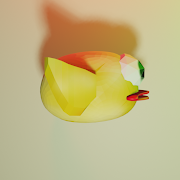

Este foi o meu segundo projeto e meu primeiro jogo feito na Unity, lancei na PlayStore sem o intuito de lucrar apenas de obter mais conhecimento. Esse jogo imita um jogo do ATARI chamado PONG mas com um design mais moderno sem perder a referencia do classico! LINK

Inspirado em um dos mais famosos jogos do Atari o Asteroids muito popular lançado em 1979 pela Atari. Com um Design e mecânicas Mais Modernas. LINK

Um jogo baseado em tanques porem com uma jogabilidade Arcade e cartoon como o mapa 99% Destrutivos para alimentar o desejo de pessoas novas até mesmo pessoas mais velhas que gostam de Tanques. LINK

Uma versão completa em 3D de um jogo famoso mas mantendo as mesmas características do original. LINK
Site desenvolvido em janeiro de 2021